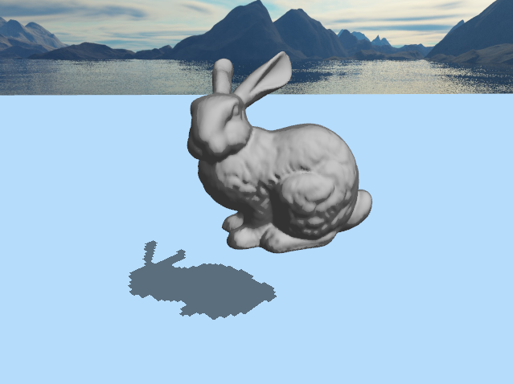
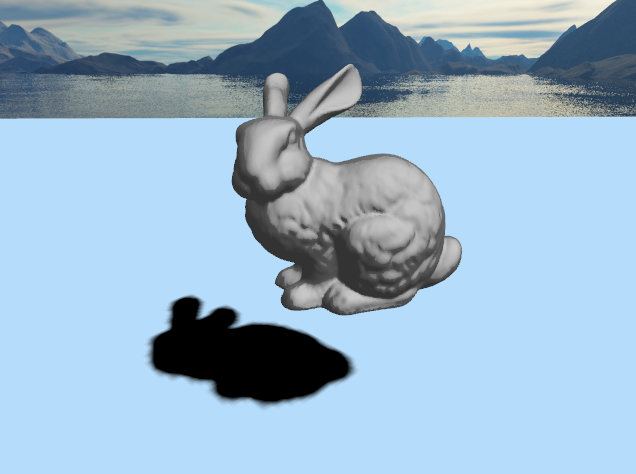
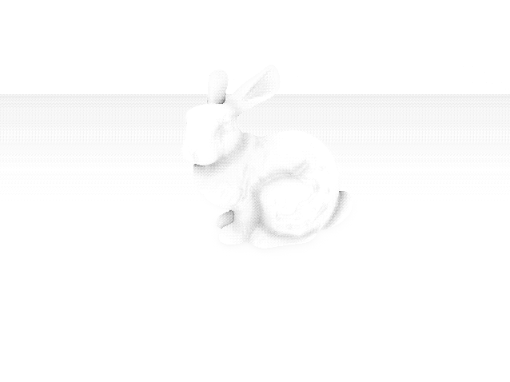
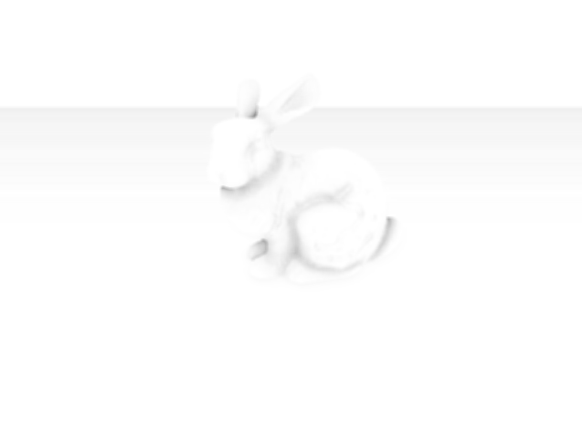
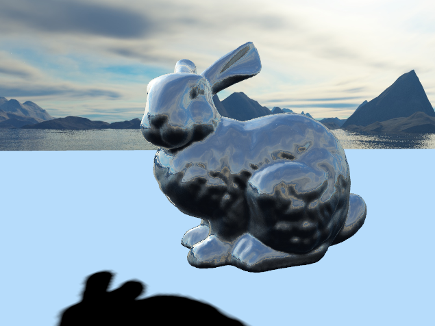
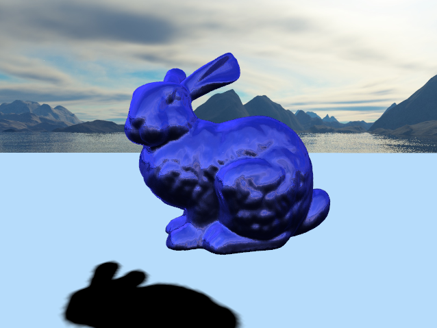

Overview
For the final project, we have implemented these features:
- Shadow mapping
- Environment mapping
- Environment mapping with Phong Shading (Add on)
- SSAO (Add on)
Additionally, we have updated or camera controls to use WASD keybinds and mouse controls for standard FPS-style camera control
Shadow Mapping
Essentially, in order to implement shadow mapping, we needed to first render the entire scene from the perspective of the light direction
looking down towards our plane. Using an orthographic projection, we can simulate a directional light perspective to capture a depth map
and store that into a texture for later reference. When rendering the actual scene, we look up each position in the scene and convert it into
coordinates in the shadow map texture. By comparing the depth of the current position and the highest mapped position in the shadow map, we
are able to determine whether or not to cast a shadow at that point.

bunny with basic shadow mapping
We also used Poisson disk sampling in order to approximate soft shadows.

bunny with softer shadows
SSAO
SSAO is a technique to approximate ambient occlusion, which is the amount of ambient light a point is exposed to. For example, the inside of a tube is more
occluded and therefore darker than the outside of a tube. A less noticeable example is that the corners and edges of a room are darker than the rest of the
room. How we implemented SSAO is that for each point, we take multiple samples in a half sphere around that point. We then compare the original point's depth value with
the depth value of each of the samples. The more samples with a higher depth value, the more occluded we assume that point to be.
In order to implement SSAO, there are four steps that we go through:
1. Render Geometry: We render the scene normally, but store information about the positions, normals, and colors of each point onto 3 separate textures.
2. Calculate SSAO: Using a half-sphere kernel of random samples we generate beforehand, we get the position of each sample relative to each point that we are checking. We
then check each position's z-value and compare with the original point to get the fraction of samples that have a higher depth value than that point. We set that point's occlusion
factor, with 0 being full occlusion and 1 being no occlusion. Then, we save the occlusion values for each point to another texture.
3. Blur the SSAO occlusion values: We want to smooth out the SSAO occlusion values to make the shading look more realistic. To do this, we average the values in a small box around each point
on the SSAO texture to get the average occlusion value for that point.
4. Render the scene with SSAO: We render a final texture to the screen that contains the scene in its original colors plus the SSAO shading such that the parts that have ambient occlusion
are rendered darker than before.
 
left -- ssao occlusion values without blur; right -- ssao occlusion values with blur
the video below shows the differences in the scene between rendering with and without ssao
Environment Mapping
We first created the skybox, by loading in 6 different skybox textures. Using these textures, we can render environment reflections onto
mesh objects by calculating the reflection between the normal of the fragment positions and the direction the camera is looking in. Using
the reflection vector, we can get the rgb value of the skybox cube at that position, creating a completely reflective object.

bunny with basic environment mapping
We calculated Phong shading through setting both material and light ambient/diffuse/specular values given a directional light. Using the same
directional light from shadow mapping. We calculate the end result of the fragment color and multiply that by the environment mapped color.

bunny with environment map + phong shading